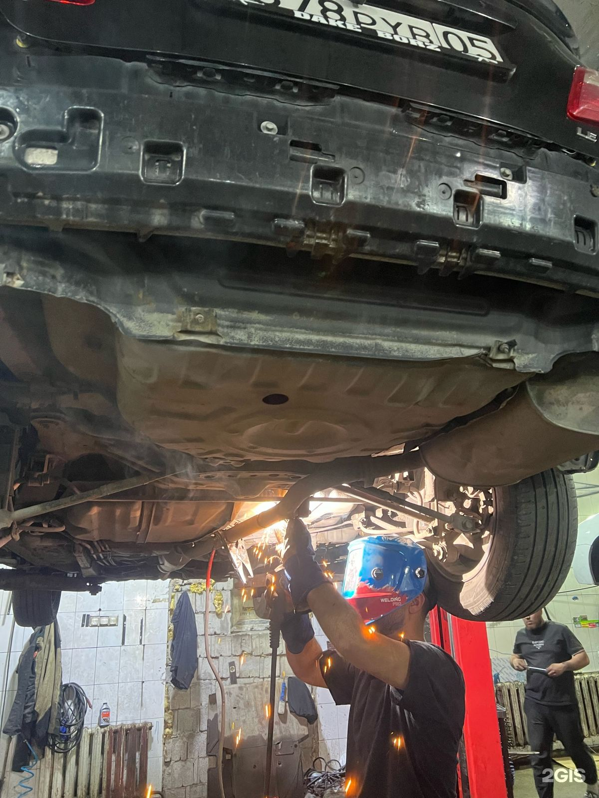

СТО «Сунақ»/Легковой автосервис/Астана
Ремонт двигателя, ГБЦ
и аргонная сварка —
в одном цехе
Токарные и фрезерные работы, восстановление сорванной резьбы, сварка алюминия, кузовной ремонт, стартеры и генераторы. Всё на одной площадке — детали не нужно возить по городу.
★★★★★ 4,8 · 151 оценка в 2ГИС Сейчас открыто · до 24:00
- ГородАстана
- ПрофильЛегковой автосервис
- АдресОзбекали Жанибек, 30Б
- СвязьЗапись, звонок, WhatsApp
- Листайте
Что беспокоит?
Выберите, что происходит с машиной или деталью — форма записи откроется с уже выбранной услугой. Если не уверены в причине, оставьте «нужна консультация»: мастер подскажет, с чего начать.
Услуги
Что делаем в «Сунақ»
Перечень собран по рубрикам и отметкам компании в 2ГИС и по тому, что клиенты описывают в отзывах. Прайс-лист компания не публикует, поэтому стоимость каждой работы — по запросу.
-
Ремонт бензиновых двигателей
Разборка, дефектовка и сборка двигателя, устранение течей и последствий перегрева. Ремонт идёт там же, где потом восстанавливают детали на станках.
Записаться -
Ремонт ГБЦ (головки блока)
Восстановление головки блока цилиндров, в том числе восстановление сорванных резьбовых отверстий в головке и коллекторе — об этом чаще всего пишут в отзывах.
Записаться -
Фрезерные работы
Фрезеровка плоскостей и посадочных мест, в том числе фрезеровка головки блока. Клиенты отдельно отмечают фрезерный участок в цехе.
Записаться -
Токарные работы
Точение, проточка, расточка и изготовление деталей по образцу — то, за чем в «Сунақ» приезжают чаще всего.
Записаться -
Восстановление резьбы
Нарезка новой резьбы и восстановление повреждённых отверстий в головке, блоке и коллекторе вместо покупки новой детали.
Записаться -
Аргонная сварка
Сварка алюминия и деталей из цветных металлов: корпуса КПП, кожухи, кронштейны и то, что «развалилось на части».
Записаться -
Сварка глушителей и выхлопа
Ремонт глушителей, резонаторов и элементов выхлопной системы — сварка по месту и восстановление прогнивших участков.
Записаться -
Ремонт КПП
Снятие и установка коробки передач, ремонт корпусов и кожухов с последующей аргонной сваркой, замена опор и подушек двигателя.
Записаться -
Кузовной ремонт
Сварка, ремонт вмятин и покраска — направление заявлено компанией в карточке 2ГИС отдельно от слесарных работ.
Записаться -
Стартеры и генераторы
Снятие, установка, ревизия и восстановление стартеров и генераторов — отдельное направление по данным 2ГИС.
Записаться -
Электронные системы автомобиля
Ремонт электронных систем авто и работы по электрике агрегатов — направление заявлено в карточке компании.
Записаться -
Не знаете, что именно сломалось
Опишите симптом словами — «стучит», «течёт», «сорвана резьба», «нужна токарка». Мастер скажет, берётся ли «Сунақ» за такую работу и что понадобится.
Записаться
Почему «Сунақ»
Четыре причины обратиться
Коротко о том, что важно владельцу машины — и что можно проверить в карточке компании и её отзывах.
-
Рейтинг 4,8 из 5
151 оценка и 61 письменный отзыв в 2ГИС, профиль компании «Подтверждён». Для автосервиса в Астане это высокий результат — и он складывался годами работы.
-
Открыто до полуночи
Ежедневно с 09:00 до 24:00, без выходных. Можно приехать после работы, а не только в утреннее окно.
-
Полный цикл в одном цехе
Слесарный ремонт, токарка, фрезеровка, аргонная сварка, кузовной цех, стартеры и генераторы — на одной площадке, без перевозки деталей по городу.
-
Мастеров называют по имени
В отзывах благодарят конкретных людей: сварщиков Сардара и Саги, мастеров Рахматуллу, Шамурада, Саламата, Рому по моторам. Клиенты возвращаются и советуют знакомым.
Профиль «Подтверждён» в 2ГИС
Компания прошла проверку 2ГИС. Рейтинг 4,8 — 151 оценка и 61 отзыв с текстом.
Как мы работаем
Четыре шага
Онлайн-запись на сайте — предварительная. Дальше всё просто: мастер уточняет задачу и называет стоимость до начала работ.
-
01
Заявка
Выбираете услугу, дату и время на сайте или пишете в WhatsApp. Это занимает минуту.
-
02
Уточнение и стоимость
Мастер связывается, задаёт вопросы по детали или симптому и называет стоимость работ.
-
03
Работы
Приезжаете в цех на Озбекали Жанибек, 30Б. Слесарка, станки и сварка — по одному адресу.
-
04
Выдача
Рассказываем, что сделали и почему. Оплата — наличными, переводом с карты или через банк.
Фото
Реальный цех «Сунақ»
Фасад, станки, сварка и готовые работы — фотографии из карточки компании, включая снимки, которые выложили сами клиенты.
Фотографии: карточка компании в 2ГИС. Снимки «от посетителей» загружены клиентами сервиса.
О компании
Сервис, куда приезжают ради сварки и токарки
«Сунақ» — легковой автосервис в Астане, на улице Озбекали Жанибек, 30Б (жилой массив Сарайшык, Юго-Восток). Работает ежедневно с 09:00 до 24:00.
Основная специализация по данным 2ГИС — легковой автосервис, кузовной ремонт, ремонт электронных систем автомобиля, ремонт стартеров и генераторов, ремонт бензиновых двигателей, металлообработка и сварочные работы.
По отзывам видно, что чаще всего сюда обращаются за аргонной сваркой алюминия, токарными и фрезерными работами, восстановлением резьбы в головке блока и ремонтом двигателя — то есть за задачами, где нужен не только подъёмник, но и станок.
- ТипЛегковой автосервис (СТО)
- Площадок1 — филиалов нет
- Рейтинг 2ГИС4,8 из 5
- Отзывы151 оценка, 61 с текстом
- ГрафикЕжедневно 09:00–24:00
- ОплатаНаличные, карта, банк
Отзывы
Что говорят клиенты
Отзывы из карточки компании в 2ГИС — с авторами и датами, текст без правок.
Вопросы
Частые вопросы
Коротко о записи, стоимости, оплате и адресе. Отвечаем только на то, что подтверждено данными компании.
Где находится СТО «Сунақ»?
Астана, улица Озбекали Жанибек, 30Б — жилой массив Сарайшык, район Юго-Восток. Координаты: 51.133352, 71.514348. Посмотреть на карте.
Какой график работы?
Ежедневно с 09:00 до 24:00, включая выходные. Это время работы указано в карточке компании в 2ГИС.
Какие работы вы выполняете?
Легковой автосервис, кузовной ремонт (сварка, ремонт вмятин, покраска), ремонт электронных систем автомобиля, ремонт стартеров и генераторов, ремонт бензиновых двигателей, металлообработка (токарные и фрезерные работы) и сварочные работы. По отзывам — также аргонная сварка алюминия, восстановление резьбы в ГБЦ, ремонт КПП и глушителей.
Сколько стоит ремонт?
Прайс-лист не опубликован: стоимость зависит от работы и детали. Назовите задачу по телефону или в WhatsApp — вам скажут цену до начала работ. Можно оставить заявку на сайте.
Как записаться?
Тремя способами: форма онлайн-записи на этом сайте, звонок по номеру +7 775 337 57 93 или сообщение в WhatsApp. Заявка с сайта — предварительная: мастер подтверждает время звонком.
Делаете токарные и фрезерные работы?
Да, металлообработка заявлена отдельным направлением в карточке 2ГИС, а токарные работы — одна из самых частых тем в отзывах клиентов.
Варите алюминий аргоном?
Да. В отзывах клиенты отдельно отмечают аргонную сварку — в том числе корпусов коробки передач и сложных деталей. Фотографии таких работ есть в разделе «Фото».
Можно оплатить картой?
Компания указывает три способа оплаты: наличный расчёт, перевод с карты и оплата через банк.
Есть ли у вас другие адреса?
Нет. У «Сунақ» одна площадка — улица Озбекали Жанибек, 30Б. Филиалов и дополнительных адресов в 2ГИС не указано.
Есть ли гарантия на работы?
Условия гарантии в карточке компании не заявлены, и мы не станем их придумывать. Уточните гарантию по конкретной работе у мастера по телефону или в WhatsApp перед началом ремонта.
Контакты
Приезжайте в «Сунақ»
Одна площадка в Астане: слесарный ремонт, станки, сварка, кузовной цех и электрика — по одному адресу.
Адрес и связь
улица Озбекали Жанибек, 30Б
Астана, жилой массив Сарайшык (Юго-Восток)
График работы
Ежедневно 09:00 – 24:00
Сейчас открыто · до 24:00
Оплата и запись
- Наличный расчётда
- Перевод с картыда
- Оплата через банкда
Способы оплаты указаны компанией в карточке 2ГИС. Онлайн-запись на сайте — предварительная: мастер подтверждает время звонком.
Записаться онлайнОнлайн-запись
Запишитесь в «Сунақ»
Выберите услугу, удобную дату и время — мастер подтвердит запись звонком. Или напишите в WhatsApp: так быстрее всего узнать стоимость работ.
Сейчас открыто · до 24:00 / Озбекали Жанибек, 30Б, Астана